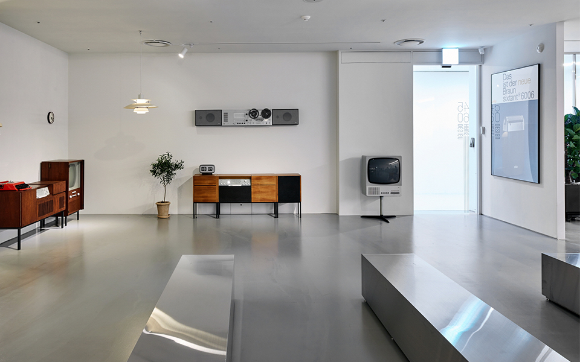

Dieter Rams
디터람스
디자이너의 책임은 실질적인 삶에 가랑비처럼 조금씩 스며들어
사회를
변화시키는 것이다.
‘나의 디자인은 좋은 디자인인가?’에 대한 고찰.
전설이 돼버린
이름, 브라운. 40여 년 동안 이곳에 몸담으며 기업의 디자인 언어를
구축한 디터 람스.
독일 출신의 세계적인 산업 디자이너. 가전회사 브라운의 디자인 부문 수장을 맡으며 쌓아온 명성은 현대의 디자인 업계에 지대한 영향을 미쳤다. 시대를 앞서간 디자인으로 유명한데 그가 1960~70년대에 디자인한 제품들도 2000년대 제품이라고 해도 믿을 정도로 세련된 디자인을 자랑한다. 애플의 최고 디자인 책임자인 조너선 아이브가 가장 존경하는 디자이너라고 하며, 때문에 애플의 디자인에서도 브라운스러운 미니멀리즘을 엿볼 수 있다.
큰 차이점은 없었습니다. 저는 오히려 건축과 디자인을 통합적으로
보고자 했습니다.
서로 다른 재료를 쓰고 규모도 다르지만
원칙적으로는 둘 다 기술적인 디자인이라고 할 수 있으니까요.
취향대로 하나둘씩 모았던 빈티지 제품들을 사무실 한 켠에 쌓아놓기
시작했고,
혼자 보기 아까워 뭇사람들에게 두어달 공유하다 어느덧
2년이라는 세월이 흘러 지금의 4560디자인하우스가 탄생하게 된 것.
4560디자인하우스의 입구에 들어서면 먼저 드넓은 카페가 반겨준다. 카페를 가득 메운 커피 내음을 뒤로 하고 로비에 들어서면 루이스 폴센(Louis Poulsen) 조명과 임스 체어(Eames Chair)로 50년대 유럽의 거실을 재현한 공간이 눈에 띈다. 그리고 긴 통로를 따라 지나가다 보면 어마어마한 양의 브라운 컬렉션이 펼쳐진다. 그 중 가장 눈에 띄는 곳은 ‘디터 람스의 방’. ‘TP 1’, ‘SK 4’, ‘L 450’ 등 상징적인 제품들로 채워진 이 공간은 마치 영화 디터 람스에서 흘깃 보았던 그의 서재를 그대로 옮겨 놓은 듯 하다.
4560디자인하우스의 입구에 들어서면 먼저 드넓은 카페가 반겨준다. 카페를 가득 메운 커피 내음을 뒤로 하고 로비에 들어서면 루이스 폴센(Louis Poulsen) 조명과 임스 체어(Eames Chair)로 50년대 유럽의 거실을 재현한 공간이 눈에 띈다. 그리고 긴 통로를 따라 지나가다 보면 어마어마한 양의 브라운 컬렉션이 펼쳐진다. 그 중 가장 눈에 띄는 곳은 ‘디터 람스의 방’. ‘TP 1’, ‘SK 4’, ‘L 450’ 등 상징적인 제품들로 채워진 이 공간은 마치 영화 디터 람스에서 흘깃 보았던 그의 서재를 그대로 옮겨 놓은 듯 하다.
